DISEGNI TINTOFILO
L'esperienza trentennale di CCStudio nel design delle camicie garantisce alta qualità e competenza in questo campo. Offriamo le nostre conoscenze e il nostro saper fare. Sviluppo di design e colorazioni originali, nuove collezioni e idee esclusive. Naturalmente ogni design ha le sue informazioni tecniche, pronte per essere tessute.
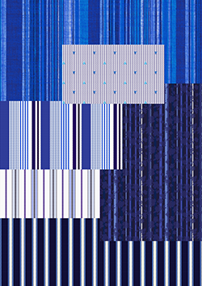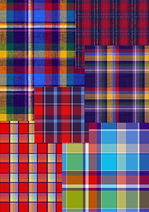
JACQUARD
Con un team di designer esperti ed efficienti possiamo sviluppare diversi tipi di design Jacquard. Con il nostro CAD Jacquard possiamo soddisfare facilmente le tue esigenze e creare i tuoi tessuti esclusivi. Lavorando con diversi tipi di filato e struttura possiamo offrire una vasta gamma di disegni.
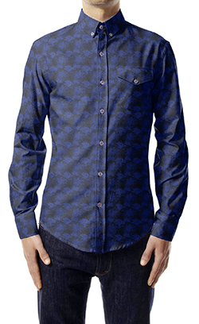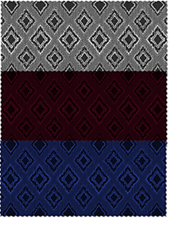
STAMPE
La stampa è un mondo da esplorare. L'arte di colorare e scegliere il giusto sfondo del tessuto ci rende capaci di offrire mille combinazioni possibili. Pronti per essere stampati, i nostri disegni possono essere modificati in base al gusto del cliente.
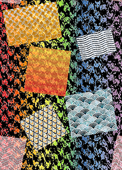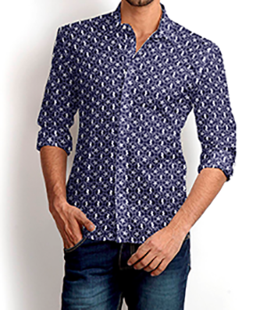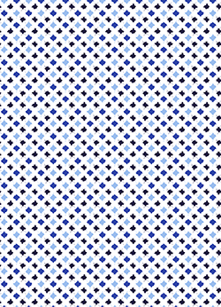
ALTRE IDEE
Con il nostro innovativo sistema di progettazione possiamo sviluppare anche progetti per calze e biancheria intima, progettare progetti e dare ai nostri clienti anche un'anteprima di alta qualità dei loro prodotti finali.
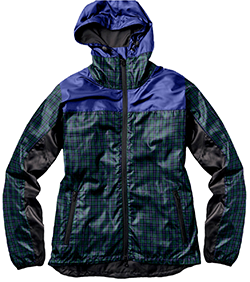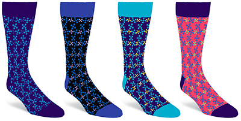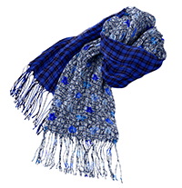
SIMULAZIONE 3D
Siamo anche in grado di applicare i nostri disegni a un'immagine piatta e creare fantastiche simulazioni di tessuti. Cravatta, papillon, camicia, costumi da bagno e altro ancora. Inoltre possiamo anche simulare oggetti 3D.
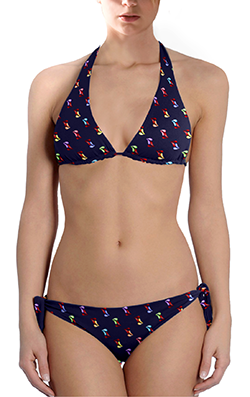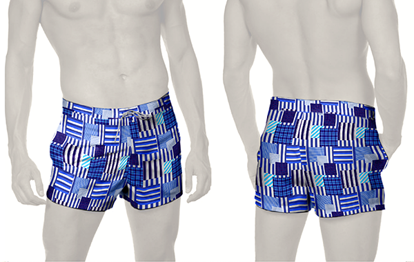
MOODBOARDS
CCStudio offre il suo gusto ricercato presentando le sue moodboard.
Effetti cromatici e temi giusti sono ciò di cui hai bisogno per costruire una collezione straordinaria e di successo.
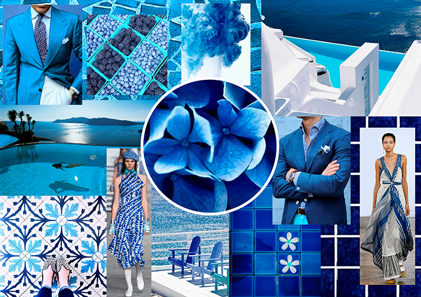
CCStudio Textile Design